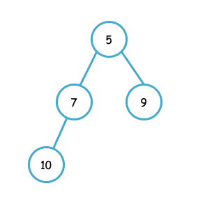

INTRODUCERE
Def: Se numește "arbore", un graf neorientat, conex și fără cicluri.
Exemplu:

Obs: Într-un arbore, între oricare ar fi 2 noduri distincte (x,y) apartine unui singur lanț.
* Un arbore cu n noduri are exact (n-1) muchii.
* Arborele este cel mai restrâns graf conex care există.